Scenario Builder#
Le Scenario Builder est l’éditeur visuel qui permet de construire les parcours de conversation du chatbot. Il fonctionne avec des nœuds reliés entre eux.
Objectif du module#
Le Scenario Builder permet de :
Poser des questions aux utilisateurs ;
Envoyer des messages automatiques ;
Gérer des boutons, listes et redirections ;
Créer des conditions ;
Appeler des API ;
Afficher des produits ;
Sauvegarder des réponses dans des variables ;
Déclencher des flow WhatsApp ou des modèles.
Organiser les étapes d’un scénario de manière visuelle.
Faciliter la création et la modification des scénarios sans coder.
Enregistrer les réponses des utilisateurs pour personnaliser les parcours.
{kind=link}
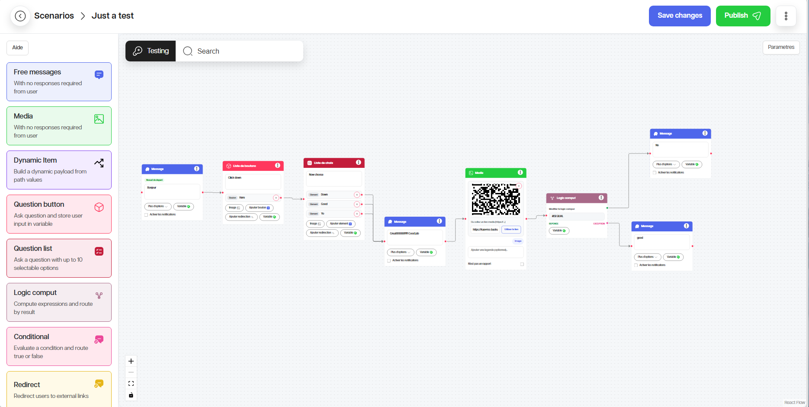
Ouvrir le Scenario Builder#
1. Dans le menu, ouvrez Scenario Builder.
2. Cliquez sur Scenario.
3. Ouvrez un scénario existant, Importer un scénario au format JSON ou cliquez sur Créer.
4. Attendez le chargement du canevas.
{kind=link}
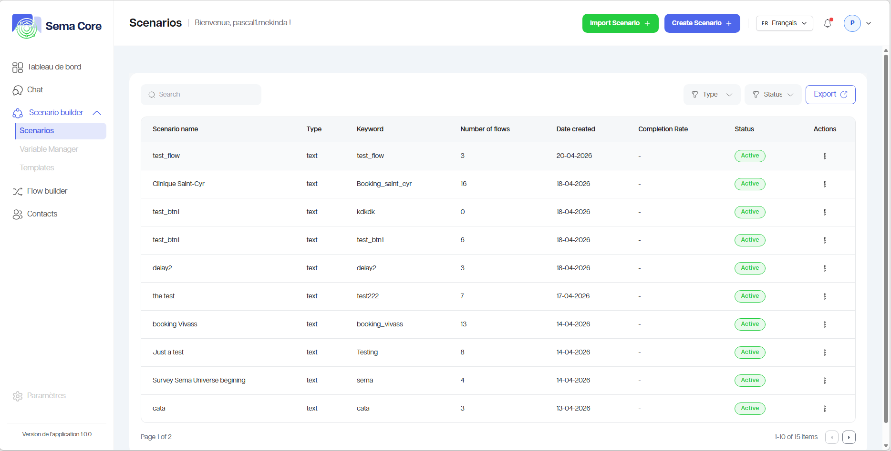
Comprendre le canevas#
Le canevas est l’espace de travail où les nœuds sont placés et reliés.
Les éléments importants sont :
Bibliothèque de nœuds : liste des nœuds disponibles ;
Canevas : zone où vous construisez le parcours ;
Connecteurs : points de sortie et d’entrée entre les nœuds ;
Actions du nœud : édition, duplication, suppression ou configuration ;
Bouton sauvegarder : enregistre les modifications.
Bouton publier : rend le scénario actif pour les utilisateurs.
Zoom et navigation : outils pour mieux visualiser le canevas.
Créer un scénario#
1. Cliquez sur Créer un scénario.
2. Donnez un nom clair au scénario.
3. Donnez le mot clé de déclenchement du scénario.
4. Definir le canal de déclenchement du scenario (WhatsApp, SMS, Web, etc.)
5. Donnez le message de secours qui sera envoyé si le scénario est déclenché mais que le chatbot rencontre une erreur.
6. Donnez une description du scénario pour faciliter la compréhension de son objectif et de son fonctionnement.
7. Définir si le scénario sera celui par défaux sur le numéro de téléphone.
8. Enregistrez le scénario.
{kind=link}
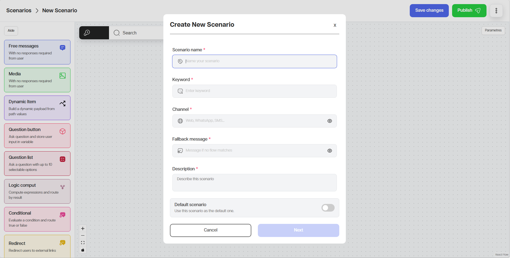
Ajouter un nœud#
1. Repérez le type de nœud dans le panneau de gauche.
2. Cliquez sur le nœud ou glissez-le vers le canevas.
3. Placez-le à l’endroit souhaité.
4. Configurez ses champs.
5. Reliez-le au nœud précédent S’il y en a.
6. Définir si le nœud est un point de départ ou pas.
{kind=link}
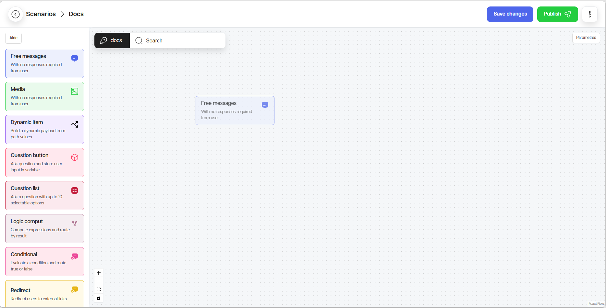
Relier deux nœuds#
1. Repérez le point de sortie du premier nœud.
2. Cliquez ou glissez depuis ce point de sortie.
3. Reliez-le au point d’entrée du nœud suivant.
4. Vérifiez que la connexion est visible.
5. Si un point reste rouge, vérifiez qu’une connexion obligatoire manque.
{kind=link}
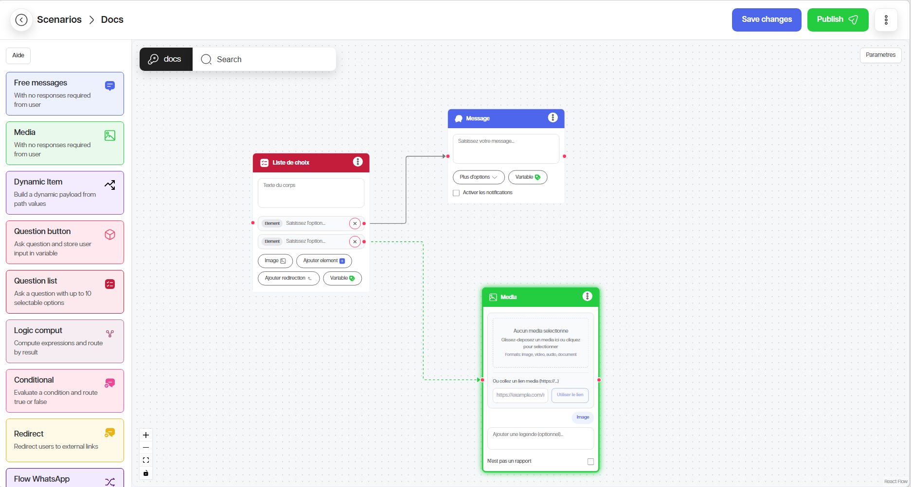
Famille de nœuds 1 — Nœuds de base#
A. Question
Le nœud Question permet de demander une information à l’utilisateur et de sauvegarder sa réponse.
Types fréquents :
Button : l’utilisateur choisit parmi quelques boutons ;
List : l’utilisateur choisit dans une liste.
Utilisation :
1. Ajoutez un nœud Question.
2. Saisissez le texte de la question.
3. Choisissez le type de réponse.
4. Ajoutez les boutons ou options si nécessaire.
5. Cliquez sur @Variable et la définir pour enregistrer la réponse de l’utilisateur.
6. Connectez les sorties vers les étapes suivantes.
{kind=link}
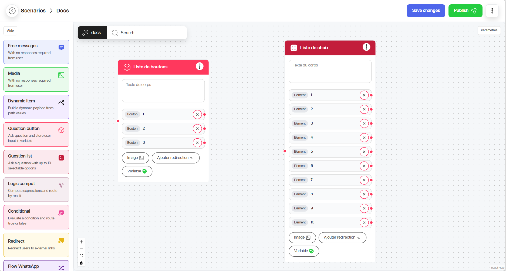
B. Message
Le nœud Message envoie une information sans forcement attendre de réponse. Si vous souhaitez enregistrer la réponse de l’utilisateur, définissez une variable.
Utilisation :
1. Ajoutez un nœud Message.
2. Saisissez le contenu du message.
3. Définissez une variable si nécessaire.
4. Activez les options avancées (notifications, n’est pas de type date, etc. ) uniquement si elles sont utiles.
5. Connectez le nœud à l’étape suivante.
{kind=link}
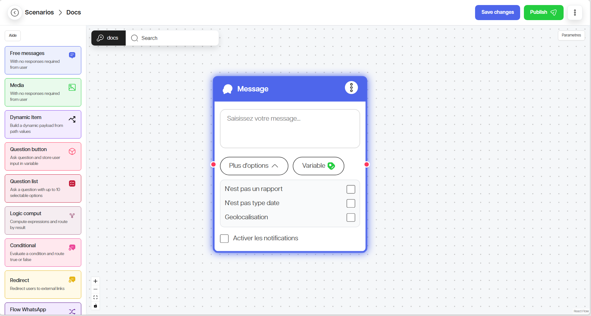
C. Redirection
Le nœud Redirection envoie l’utilisateur vers un lien externe.
Utilisation :
1. Ajoutez un nœud Redirection.
2. Renseignez le libellé du bouton.
3. Ajoutez le texte explicatif.
4. Renseignez l’URL.
5. Testez le lien avant publication.
{kind=link}
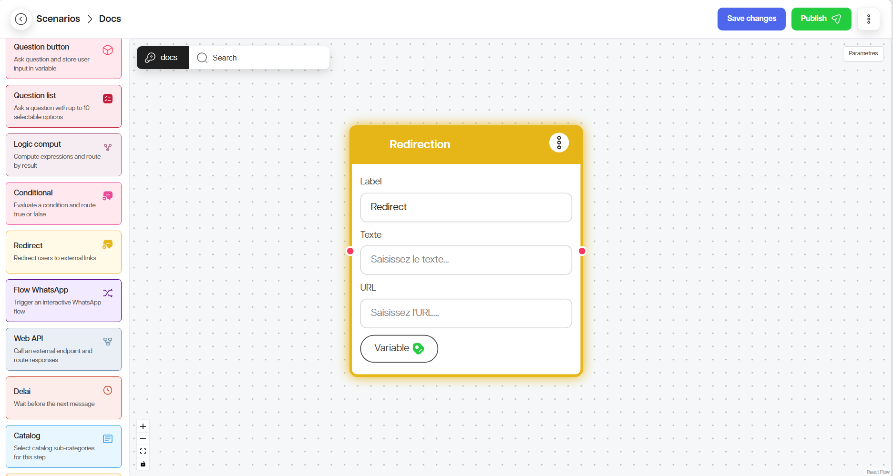
D. Condition
Le nœud Condition sépare le parcours selon une règle logique.
Utilisation :
1. Ajoutez un nœud Condition.
2. Cliquez sur la configuration de condition.
3. Choisissez l’opérateur.
4. Saisissez l’expression logique.
5. Connectez la sortie Vrai.
6. Connectez la sortie Faux.
{kind=link}
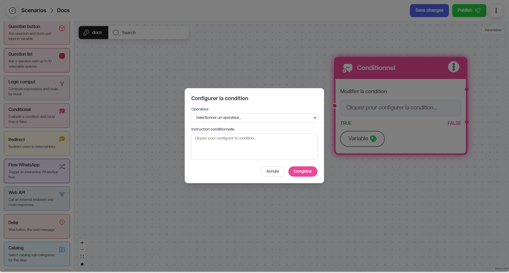
Famille de nœuds 2 — Nœuds avec Options#
A. Délai d’attente
Le nœud Délai d’attente pause le parcours pendant une durée définie.
Utilisation :
1. Ajoutez le nœud Délai.
2. Renseignez la durée en millisecondes.
3. Connectez la suite du parcours.
Exemple : 3000 correspond à 3 secondes.
{kind=link}
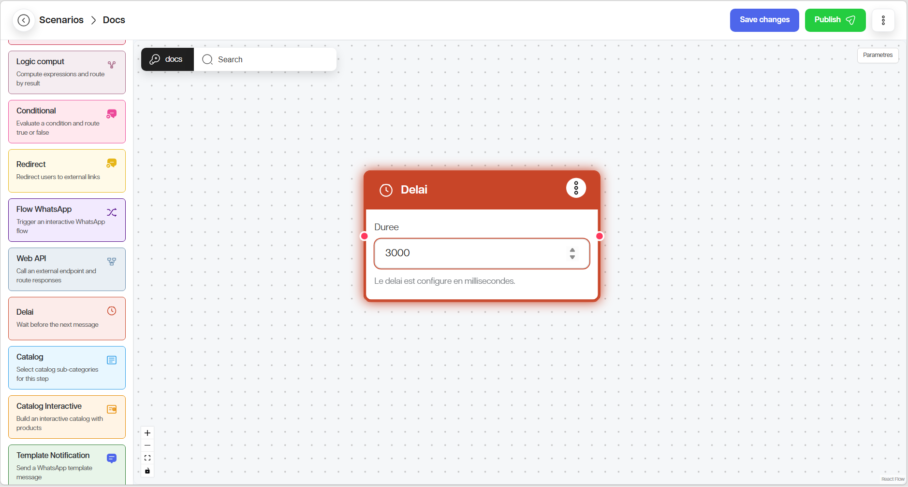
B. Catalogue Interactif
Ce nœud affiche un catalogue interactif avec des sections.
Utilisation :
1. Ajoutez le nœud Catalog Interactive.
2. Renseignez l’en-tête.
3. Renseignez le pied de page si nécessaire.
4. Ajoutez le corps du texte si nécessaire.
5. Créez les sections.
6. Sélectionnez les produits du catalogue.
7. Ajoutez un texte de bas de page si nécessaire.
8. Enregistrez la sélection dans une variable.
{kind=link}
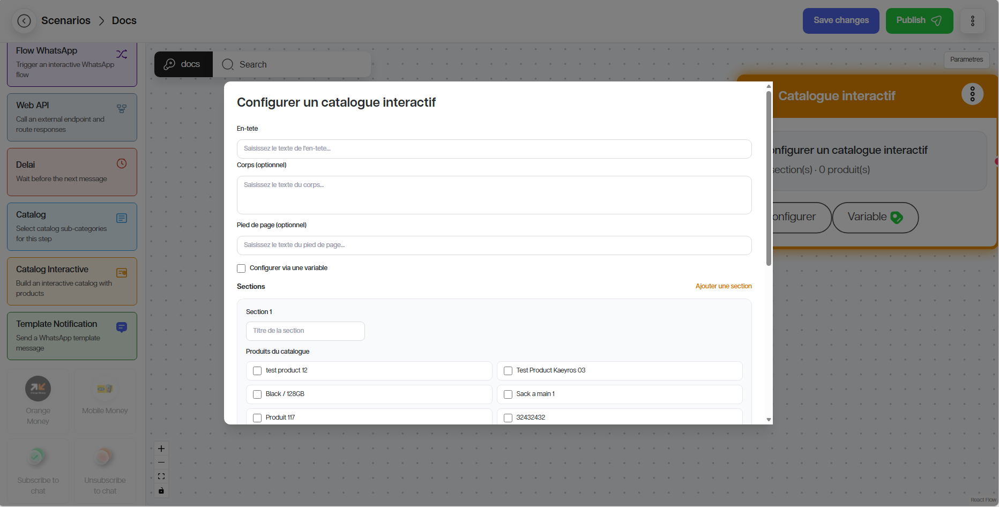
C. Catalogue
Le nœud Catalogue affiche un ensemble de produits.
Utilisation :
1. Ajoutez le nœud Catalogue.
2. Cliquez sur Ajouter une sous-catégorie.
3. Sélectionnez les catégories ou produits.
4. Enregistrez la sélection avec @Variable.
{kind=link}
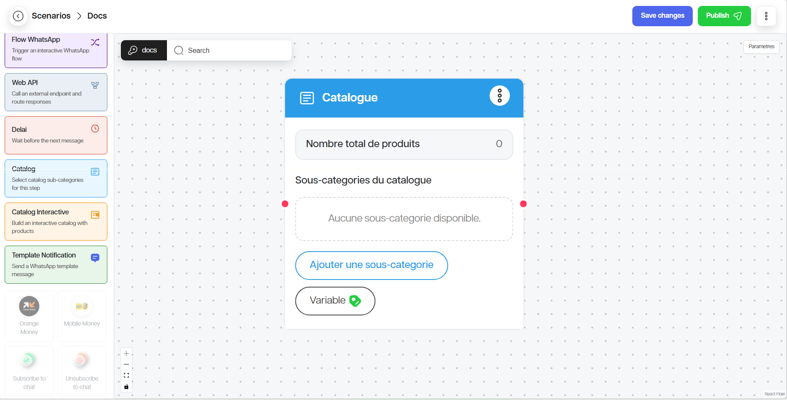
Famille de nœuds 3 — Nœuds avec Intégrations#
A. Web API
Le nœud Web API permet d’appeler un service externe. Vous pouvez choisir de configurer l’API avec un JSON complet ou un via l’éditeur par champ.
Utilisation via l’éditeur par champ :
1. Ajoutez le nœud Web API.
2. Cliquez sur Configurer API.
3. Choisissez l’option Éditeur par champ.
4. Choisissez la méthode : GET, POST, PUT, PATCH ou DELETE.
5. Renseignez l’URL.
6. Ajoutez les en-têtes si nécessaire.
7. Ajoutez le corps de la requête lorsque cela est nécessaire.
8. Ajoutez les paramètres de requête si nécessaire.
9. Enregistrez la réponse dans une variable.
10. Testez le scénario avec des données réelles.
{kind=link}
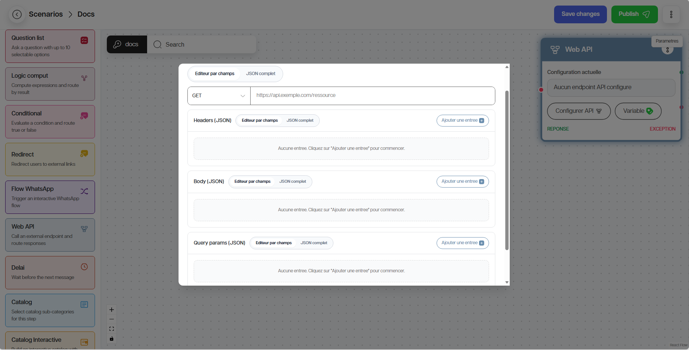
Utilisation via JSON complet :
1. Ajoutez le nœud Web API.
2. Cliquez sur Configurer API.
3. Choisissez l’option JSON complet.
4. Saisissez la requête complète au format JSON.
5. Testez le scénario avec des données réelles.
{kind=link}
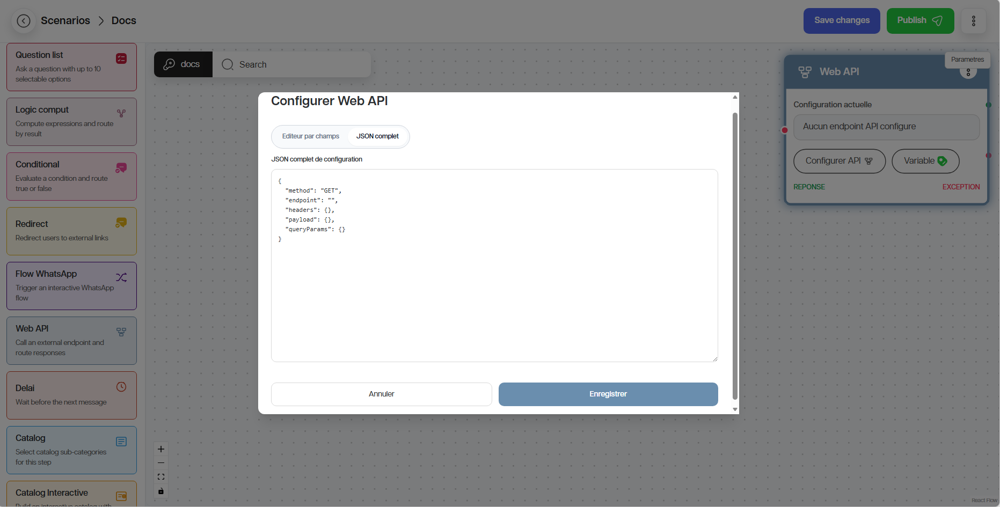
B. Dynamic Items
Le nœud Dynamic Items affiche une liste dynamique à partir d’une donnée variable ou d’une réponse API.
Utilisation :
1. Ajoutez le nœud Dynamic Items.
2. Renseignez le texte du message.
3. Renseignez le titre de la liste des élements à afficher.
4. Renseignez l’ID de la variable ou de la réponse API qui contient les éléments à afficher.
5. Renseignez les données
6. Définir le format d’affichage des éléments (Afficher en liste ou afficher en concaténation).
7. Enregistrez la sélection avec @Variable.
8. Connectez la suite du parcours.
{kind=link}
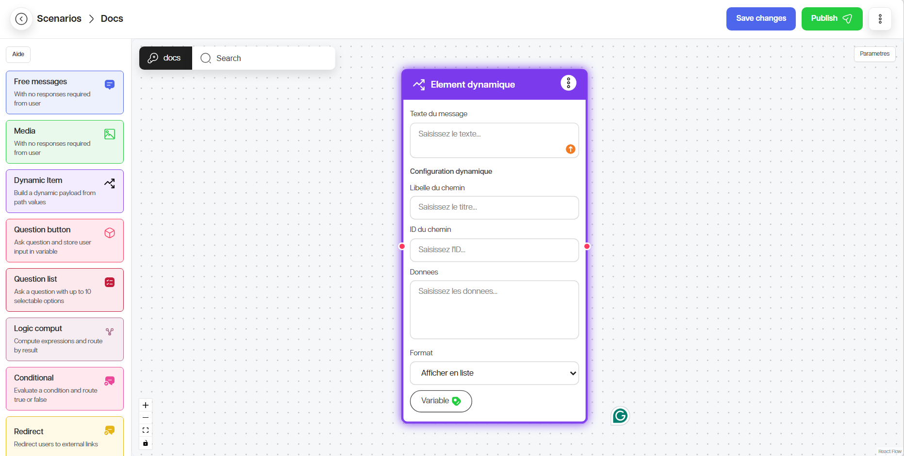
C. Logic Compute
Le nœud Logic Compute calcule ou évalue une expression. Il est utile pour transformer une valeur ou appliquer une règle avant une condition.
Utilisation :
1. Ajoutez le nœud Logic Compute.
2. Selectionnez l’opérateur logique.
3 Saisissez l’expression logique .
4. Enregistrez le résultat dans une variable.
5. Connectez la suite du parcours.
{kind=link}
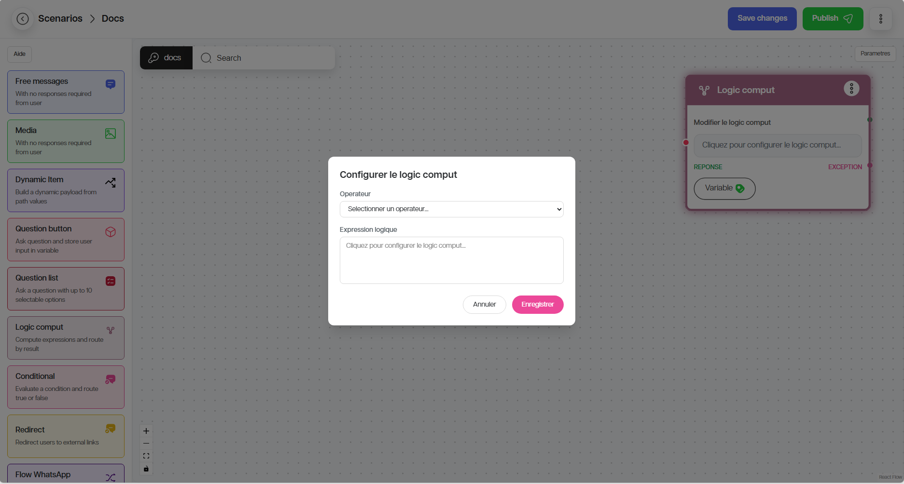
D. Notification par modèle
Ce nœud envoie un modèle approuvé. Il est souvent utilisé pour des messages WhatsApp structurés.
Utilisation :
1. Ajoutez le nœud Notification par modèle.
2. Cliquez sur Configurer le template.
3. Définissez le nom du template.
4. Renseignez le numéro de téléphone du destinataire.
5. Renseignez le code de la langue.
6. Ajoutez les variables de personnalisation si nécessaire (paramètres d’en-tête, paramètres de corps, et les boutons).
7. Enregistrez et testez le scénario.
{kind=link}
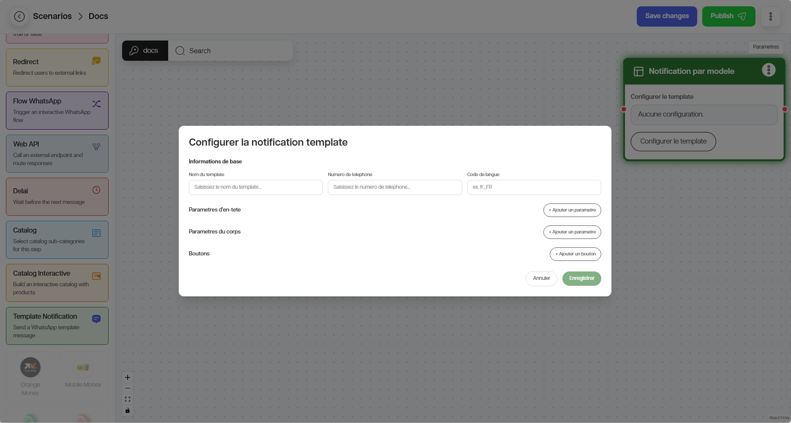
E. Média
Ces nœuds permettent d’envoyer une image, une vidéo, un audio ou un document, avec ou sans légende.
Utilisation :
1. Ajoutez le nœud Média.
2. Renseignez l’URL ou téléchargez le média (image, vidéo, audio, document).
3. Ajoutez une légende si nécessaire.
4. Enregistrez et testez le scénario.
{kind=link}
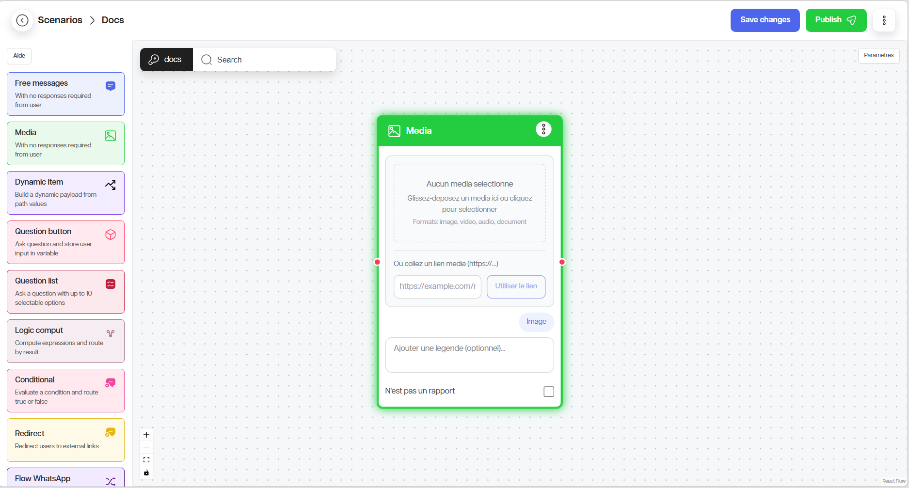
F. Flow WhatsApp
Ce nœud lance un flow WhatsApp natif.
Champs fréquents :
En-tête ;
Pied de page ;
Corps ;
Flow Token ;
Flow ID ;
Flow CTA ;
Screen ;
Payload data ;
@Variablepour récupérer les données soumises.
Utilisation :
1. Ajoutez le nœud Flow WhatsApp.
2. Renseignez l’en-tête.
3 Renseignez le corps du message.
4. Renseignez le pied de page.
5. Renseignez le Flow token.
6. Renseignez le Flow ID.
7. Renseignez le Flow CTA.
8. Renseignez les données de payload si nécessaire.
9. Renseignez l’écran de destination après le flow si nécessaire.
10. Enregistrez les données retournées dans une variable.
11. Connectez la suite du parcours (Web API).

Variables#
Une variable est une donnée enregistrée pendant la conversation. Elle peut contenir des informations saisies par l’utilisateur, des réponses d’API, ou des résultats de conditions.
Exemples :
Nom du client ;
Choix d’un bouton ;
Produit sélectionné ;
Réponse API ;
Résultat d’une condition.
Pour sauvegarder une variable :
1. Ouvrez le nœud concerné.
2. Cliquez sur @Variable.
3. Donnez un nom clair à la variable.
4. Enregistrez.
5. Réutilisez la variable dans les messages, conditions ou API.
{kind=link}
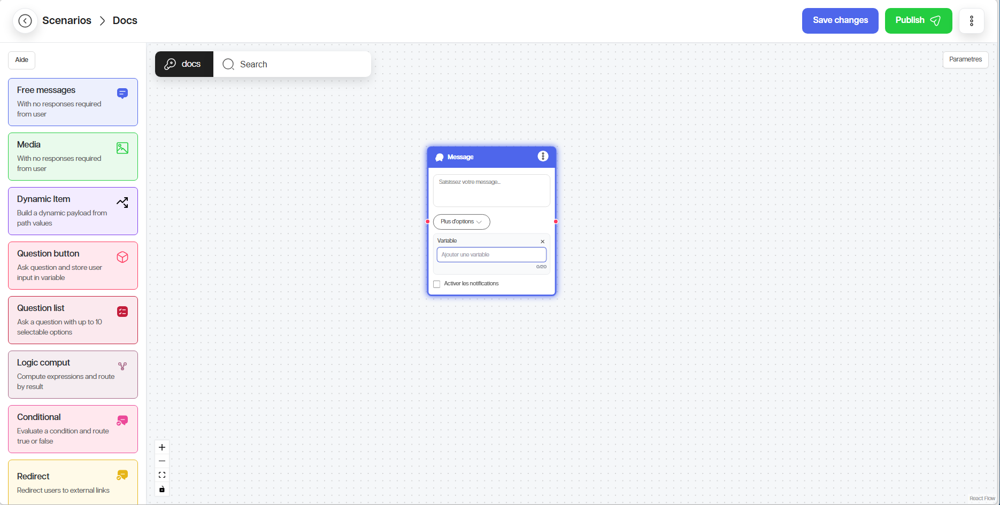
Bonnes pratiques#
Important
1. Commencez toujours par un message clair.
2. Donnez des noms simples aux variables.
3. Connectez toutes les sorties obligatoires.
4. Testez le scénario avant publication.
5. Évitez les textes trop longs sur mobile.
6. Gardez une logique simple et lisible.
Liste de contrôle avant publication#
Tous les nœuds sont-ils connectés ?
Les variables sont-elles correctement nommées ?
Les conditions ont-elles une sortie Vrai et Faux ?
Les liens externes fonctionnent-ils ?
Les API retournent-elles le résultat attendu ?
Le parcours a-t-il été testé avec un utilisateur de test ?